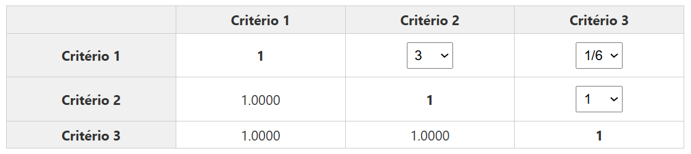

Sobre esta Etapa: Escolha do Método de Comparação
Escolha o método de comparação que melhor se adequa ao seu perfil. Ambos os métodos produzem os mesmos resultados, diferenciando-se apenas na forma de entrada dos dados.
Matriz Direta
Preencha todos os valores da matriz de comparação de uma única vez. Ideal para usuários experientes que já conhecem o método AHP.
Formulário Assistido
Compare critérios par a par de forma guiada, uma comparação por vez. Recomendado para iniciantes ou análises mais complexas.
Escala de Saaty
Em ambos os métodos, você utilizará valores de 1 a 9 para indicar a importância relativa entre critérios, conforme a escala de Saaty.
3 Escolha o método de comparação
Matriz Direta

Preencha toda a matriz de comparação de uma vez, com visão completa de todas as comparações.
- Preenchimento mais rápido
- Visão global da matriz
- Para usuários experientes
Formulário Assistido

Compare critérios par a par, uma comparação por vez, com interface guiada e explicativa.
- Processo passo a passo
- Interface intuitiva
- Recomendado para iniciantes